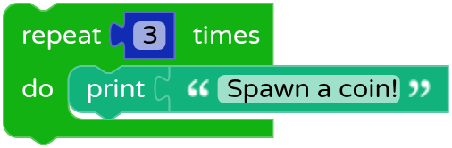

Course home · Lesson 6 · Lesson 7
Count-controlled loops
Learning objective. Use for and range() to repeat a game action and use the loop counter.
Read the same program in two forms
Blockly

GDScript
for coin in range(3):
print("Spawn a coin!")- Computer science. Use a count-controlled loop when you know how many times an action should happen.
- GDScript.
for coin in range(3):givescointhe values 0, 1, and 2. The indented body runs once for each value. - Godot. A level can repeat a spawn action to place several items using the same rule.
Predict the output
Predict all three lines. Why do we add 1 to the counter?
for slot in range(3):
print(slot + 1)Check the prediction
The lines are 1, 2, and 3. The counter starts at 0, but the labels start at 1.
Guided task · Repeat a spawn
Fix the count so the code prints Spawn once for each of four items.
for item in range(2):
print("Spawn")Debugging task · Fix the labels
The waves should be labelled 1, 2 and 3. Fix what the code prints.
for wave in range(3):
print(wave)Independent task · Place a row of coins
Write a loop that prints five x positions spaced 20 pixels apart, starting at x = 0. Run it again with six coins.
# Print one x position per loop step.Success criteria. Five coins give positions 0, 20, 40, 60, 80, each on its own line. Six coins add 100.
Apply it to your project
Pick a repeated item in your level. In _ready(), use a loop to print the positions you would use. Check that each position is in the playable area. You can also run a loop that moves the rover. Godot editor setup
Optional extension
Change your formula to start the row 10 pixels from the edge, keeping the same gaps.
Reflection
Why is changing the loop count easier than adding a separate line of code for each coin?